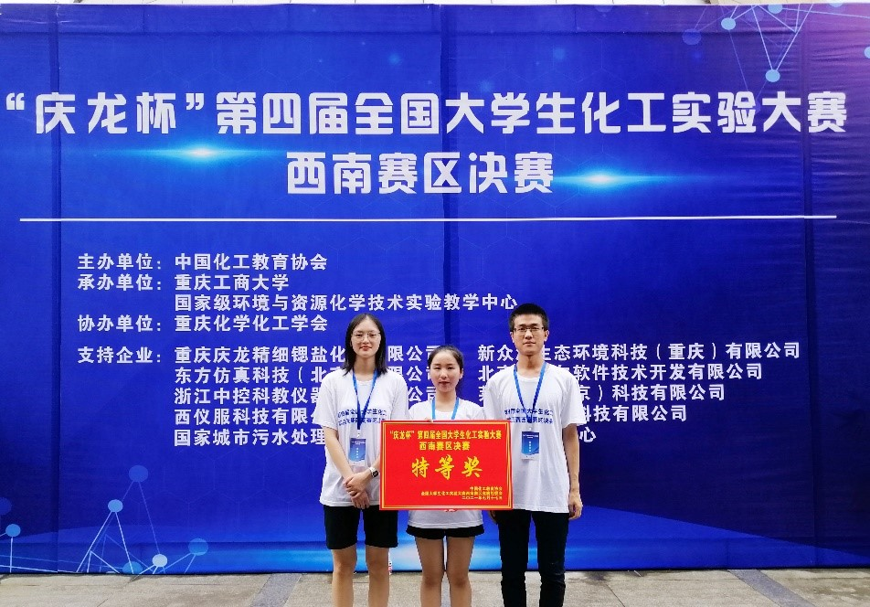

执行力，才是一个人最顶级的自律
— —专访生化优秀学子周攀
毕业季来临，站在命运的十字路口上，年轻的学子们青春洋溢又满怀惆怅，如何选择自己未来发展的道路？如何在自己选择的道路上乘风破浪？这些或深或浅的问题，相信从周攀同学的考研故事中，都会得到解答。
石以砥焉，化钝为利
2018年9月，和大多数新生一样，对大学生活满怀期待的周攀踏入了校园，开启了他的大学生活。但和大多数新生不一样的是，刚进入大学校园的周攀，在红榜上看见学姐学长们的优秀事迹后，产生了“我也要做到”的情绪。他是个不满足于现状的人，天生带着拼搏的基因，他要用自己的努力创造未来。于是一颗考研的种子在他的心中埋下，等待着生根发芽……
大一时，周攀清楚地明白，英语是自己的短板。于是他花费大量的时间来提高自己的英语水平，加强英语的学习，打破了别人口中“英语水平上了大学就会下降的‘魔咒’”，在最后的成果检验中，弱势的英语甚至成了他考研时的优势学科。
在平时的学习中，“刻苦钻研、严于律己”更是他的代名词，无数个日夜里，校图书馆见证着他一路的成长与汗水：课堂上不懂的问题就在下课后反复钻研，直到解决；课后的科目作业不会，也绝不抄答案应付了事，而是想方设法地尽力完成；课外的竞赛即使再难，也要做出成果来看看。这样显著于他人的钻研精神，为他的考研之旅打下了坚实的基础。
读万卷书，行万里路
“我们要把握当下，要有足够的积累，并且一直在路上，这样未来的我们就有无限的可能！”
2021年7月，周攀心中那颗考研的种子终于等来了破土而出的时刻。
这时的他代表学校去重庆工商大学参加了第四届全国大学生化工实验竞赛。这场比赛高手云集，西南赛区有整整48支队伍参赛，又赶上了疫情爆发，比赛延期等不可抗力，进入总决赛，简直是难于登天。
但他却做到了，凭借着对化学的一腔热血，凭借着以不变应万变的良好心态，凭借着团队成员们的互相鼓励——周攀的团队脱颖而出，成功的成为了进入决赛的六支队伍之一。谈起比赛历程时，周攀心中饱含怀念，“在准备比赛的这一段时间，非常感谢在一起的伙伴，陪我度过了一段艰辛而又快乐的时光。”
获奖时的喜悦围绕着他，对化学专业的热爱，在此时达到顶峰。这就是他最后坚定报考材料与化工专业的原因之一。
除了对专业的热爱，促成他考研的根本原因，是他那颗不服输的心。在这次竞赛中，他看到了其他选手熟练的实验操作，那种自信与沉稳的心态是他所不及的，同时他也发现了其他学校学生在各方面的闪光点，那正是彼时的自己所缺少的。这些差距，都成了激励他前进的养分，没有什么鸿沟是不可逾越的，没有什么问题是无法解决的！于是他下定决心——考研，用考研来充实自己，用更大的平台来锻炼自己，让自己成为更优秀的人！
乘风破浪，披荆斩棘
没有成功是一蹴而就的，没有胜利是不需要付出的。考研过程中的诸多困难，都成了周攀前进道路上的“经验之谈”。
首先遇到的就是选择考研资料的问题，周攀看了许多经验帖子，但还是理不清思路。于是他积极寻求解决方法，去找到了同实验组的杨经纬师兄，师兄给他详细讲解了自己选择资料的方法，还同他分享了自己的考研经历。这些前辈的经验，让周攀对自己地考研之旅有了更加明确的计划。
其次是关于考研院校的选择：选得学校过好自己可能难以上岸，选得差些又怕分数浪费。在经过几番纠结后，他与师长进行了沟通，加上自己对重庆大学优秀学习氛围和师资力量的向往，最终，他决定报考重庆大学。
在考研过程中，师长们的帮助必不可少，周攀在给出考研建议时说到，“多利用身边的资源，多听听身边人的意见，切忌闷头往前冲，忽视了实际情况。”
道阻且长，行则将至
都说万事开头难，其实比起开头，坚持才是最难的事。他心中考研的种子从埋下到发芽，直至今天的开花结果——成功上岸。都离不开他一次次在心中与那个想要放弃的“自己”进行斗争。在无数个披星戴月的日子里、在一遍遍翻阅的书本中都记录着他作为一个考研人的艰辛与决心。
“我是在2021年初开始准备考研的，买了资料就在家开始复习。”当周攀决定考研、开始考研后，他就用实际行动展现着“执行力，才是一个人最顶级的自律。”这句话。“不拖拉，按照计划坚决执行”，这是他在心中重复最多的话语。根据他的日程安排表我们可以发现，他对自己的学习计划已经精确到了每月、每日、每时、每刻。
“我当时为自己制定了详细的每日作息时间表，按照计划严格执行三到五天后，就能发现自己是否能在相应的学习时段一直保持着高效率。比如：通过执行计划表，我发现自己5-6点学习效率低，经过调整后，我每天差不多五点就去吃晚饭，把学习安排在自己学习效率高的时间段。”绝对高效，绝对自律，这就是周攀超强执行力的来源。
皇天不负苦心人，在经历了漫长的奋斗后，他成功上岸了重庆大学!
心之所至，意之使然
考研是一种内在的自知。知道自己想要什么，这是非常重要的。既然自己想要去更好的地方，那就要付出实际行动，去学习、去努力、去争取。
周攀学长向大家分享了自己考研时总结的经验教训：制定详细计划表，考研才会不迷茫；学会给自己放假，每周一定要放松一天；寻找一位志同道合的研友，有助于分担考研压力；养成早睡早起的良好作息习惯，每晚11点前准时睡觉；临近考试可能会陷入焦虑，要给自己心理暗示，相信自己一定行！
除此之外，周攀表示，“勇敢一点，有梦就去追，自己的梦想就要自己动手去实现。‘锲而舍之，朽木不折；锲而不舍，金石可镂。’如果选择考研就一定要坚持下去，千万不要因为担心自己的四六级、学习绩点、有无科研经历而不敢做出决定，初试只看成绩。要用你的决心去战胜一切困难，去把一切不可能变成可能！”
在考研这条路上，苦闷和困难才是常态。你看到的每一个闪闪发光的人，他们都经历过脚下踩着刀刃前行的过程。考研学子一定要相信自己，坚持走下去，这样才有机会成为那个闪闪发光的人。
绳锯木断，水滴石穿。因为有目标才会勇往直前，因为有决心才能所向披靡。总有那么一群人，在追逐自己梦想的路上，能够顶住孤独和困难去前行，希望毕业时走出攀大校门的那一刻，我们都能不负初进校园的期望，成为自己想成为的人！